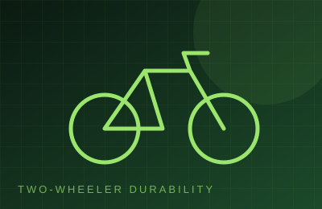
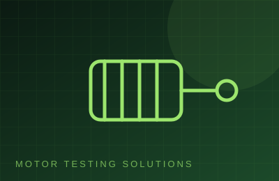
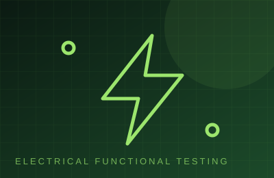
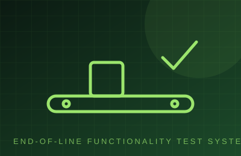
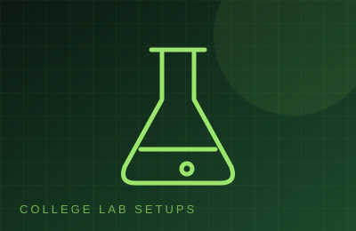
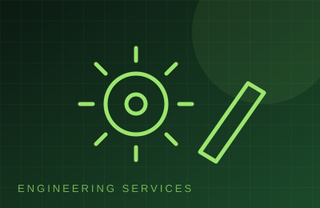

Application-ready systems to validate products and improve production quality.

Rugged test rigs that run products through long-duration cycling and heavy load profiles, with continuous data logging and automatic stop criteria.
Request details →
Durability test systems that evaluate two-wheeler components and assemblies under demanding, real-world operating conditions.
Request details →
Complete motor test benches measuring performance, efficiency, reliability, torque, speed and operating characteristics.
Request details →
Electrical functional test systems that verify product performance, electrical parameters and functional operation.
Request details →
Automated end-of-line testing that ensures every finished product meets defined quality, performance and functionality standards.
Request details →
Precision test systems for assessing product strength and reliability against shock, vibration and demanding environmental conditions.
Request details →
Complete engineering laboratory setups with practical testing and training systems for hands-on technical education.
Request details →
Specialised engineering services covering testing, automation, system development, integration and customised technical solutions.
Request details →Tell us what you need to automate or test. We will study the requirement and propose a practical solution.